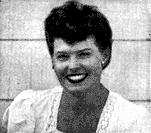

Dear Friends:
If your husband reads this plan and then tries to talk you into doing something like it, you might say, "Poor Mrs. Robinson - I'll bet she has to do most of it and I wouldn't be in her shoes for anything." So I thought you might like to know where I stand on all this.
The cue to our success with the "Have-More" Plan is found in one common little word throughout these pages. Our editorial "we" means exactly that - it isn't used just for the sound effect. We have honestly worked together as a team on everything from our first seven hens to writing this Plan. Believe me, the marriage of a man and woman really means something when you start homesteading. Somehow, working close to the earth and with nature seems to make the combination of man and wife more important and, I believe, makes marriage a happier success than is possible in sterile city life.
Do I sound old fashioned? Let me explain that neither Mr. R. nor I came from farms originally. We married and lived in New York City for five years and I suppose we could have been described as city sophisticates. So what we have discovered as an exhilarating way of life comes from actually trying city life and country living and then choosing (intelligently, we think) the better.
Out here on our wee farm my husband really needs me and I, in turn, could not get along without him. When he calls out, "Quick, honey, bring me my bee veil! These bees are in a bad mood," he really does depend on me to help him out.
Mr. R. naturally does the heavy work in the garden and with the animals, while I take care of canning, freezing and household jobs. But!!! We both encroach on the other's job. Mr. R. canned at least 50 quarts of tomatoes and froze a couple of dozen packages of vegetables - all after he got home at night which isn't before 7 o'clock. He's nuts, you think? Maybe, but he says it's a pleasure after sitting at a desk all day. I, in turn, do necessary chores during the day and I usually milk the goats.
Ed always envies me getting in on all the exciting events here - it's I who watched the bees swarm (sad affair, but very interesting), I who greet the fuzzy day old chicks that are so adorable, I who had the great thrill of watching the goslings gradually emerge from their shells, and so on indefinitely. There's always something happening here. That's what made me decide the old idea is really true - if you want to be happy and stay young, keep growing things around you. When you grow vegetables, flowers, chickens, pigs, geese, goats and a child all at the same time, how can you be bored?
But about the work - that's what's worrying you, I know. Yes, I do work hard, I suppose - at least, other women seem to be impressed. But I don't work any harder than I did when I was employed in an office and at the same time kept house as so many women do. One secret I have found is not trying to keep a spotless house - I have decided it's a waste of time. I guess our other secret is that what seems dull work to many people frequently is fun to us.
Now I don't claim we enjoy doing everything - for instance, picking chickens, washing too many greens at one time for canning, or cleaning out manure. But even these disagreeable jobs are not too bad when done together, and what satisfaction I get when they're done! Being a woman you can imagine my blessed feeling at knowing I have, to name just one item, 25 broilers in my freezer-ready to be cooked for my family or friends whenever I want them. We women probably place security for our families above everything else - so you wouldn't mind being in my shoes, would you, if you could say - "I could feed my family well without buying another thing for six months!"
I guess you may think by now that I am a very unsociable person but I like to play as well as anyone else. I get very fed up with it all occasionally. When that happens, I try to park our child and the chores with a neighbor and off I go to the city - the Robinson's don't begrudge Mom her day off, especially when it makes her so glad to get back.
There are certain basic facts about the work though - summer is obviously the busiest season while winter gives you loads of time for parties, dinners or whatnot. Except in the middle of summer we have weekend guests who like to play at farming and in the winter we have supper parties. Incidentally, I find it doesn't cost much to entertain guests since we started our "Have-More" Homestead, because we always have surplus food on hand. Nature has worked out a swell scheme - by the very fact of winter she forces you to rest. Then when spring come, you're refreshed and eager to start all over again.
And I think you'll make some new friends you'll like - without exception, the people we have met in connection with our animals have been tops. I don't know whether owning animals makes people nice or whether only swell people care for animals, but whichever it is, both Ed and I have thoroughly enjoyed the new friends we have made.
After you work on some of the "Have-More" projects, you may well find you are so interested you would like to expand one of them on your very own and develop it to "pin-money" size. I, for example, really adore the geese and next year I think I'll raise a fair-sized flock.
There's one more vital point in what the "Have-More" Plan means to me. That's Jack Robinson, our little son. I can't begin to tell you what our new way of life is doing for him. He loves all the animals and already at the age of four wants to help take care of them. And we let him to the best of his tiny ability. He is already an independent little thing, afraid of nothing. And need I say what has been written so many times before - by seeing and helping care for our animals he will naturally grow up knowing many facts of life (and I don't mean just sex, though that is included). Furthermore he will have a basic understanding of what living is all about and what it means to earn his own bread. I believe it is frequently the country boys who have made good in America-anyhow, I sincerely believe we are giving Jackie the best opportunity in the world to learn everything from hammering a nail to developing an intelligent and responsible personality.
And what's more - he will have all the childhood fun for which country life is famous. From his standpoint alone all this is worthwhile.
As you can see, I can't even keep "we" out of my own letter to you. Your husband can't "Have-More" alone - he needs all your interest and help - but isn't that the way you want it? If you start the "Have-More" Plan. I truly believe you'll find many intangible rewards for yourself and your entire family for you'll all be working together, probably more so than ever before in your lives.
My very best wishes to you with your plan - I hope you'll get as much fun and deep satisfaction out of it as I.
Sincerely, Carolyn Robinson
|
 |
|
|